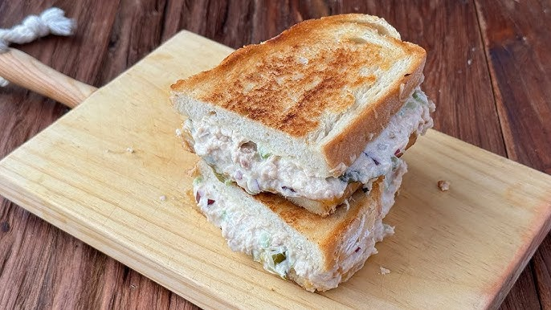

How to do pan con tuna

The pan con tuna is a classic whenever you're hungry and in need of something light and
full of protein. It will make the perfect light lunch or light dinner.
Ingredients:
Steps:
Toast the bread
Put the tuna in a small bowl
Pour a chunk of mayonnaise on the bowl with the tuna
Mix in the mayonnaise and the tuna
When the bread is toasted, pour the mix on the bread
Enjoy